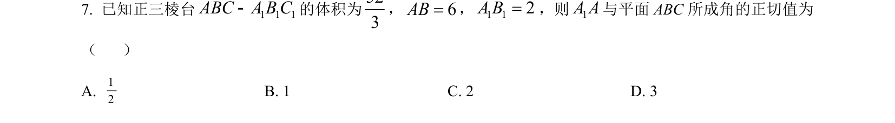
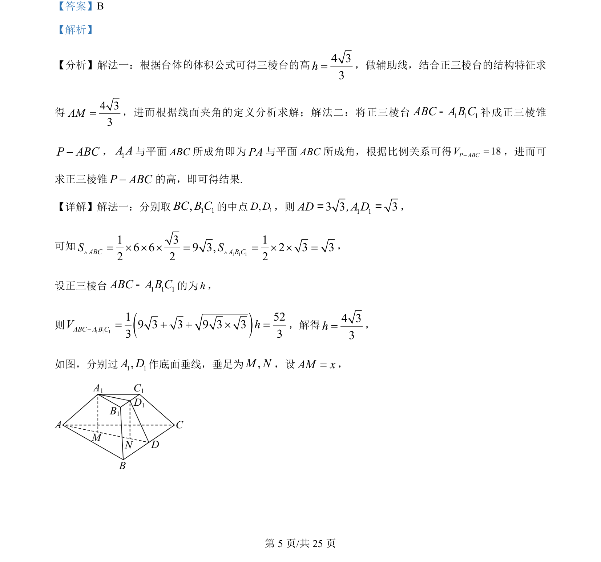
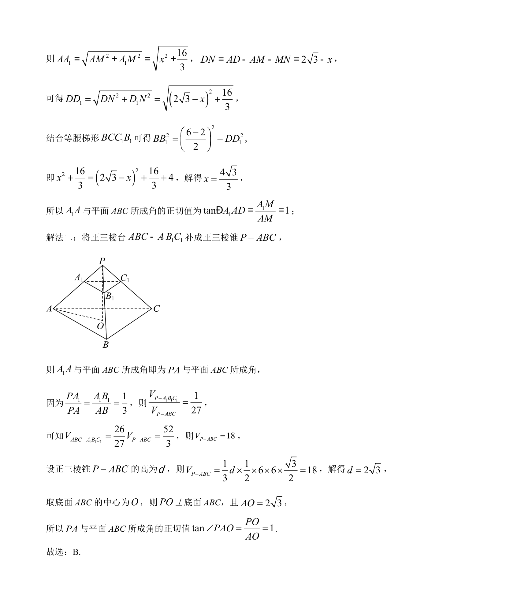

考点：台体体积 线面角 正三棱台 几何补形

考查正三棱台体积与线面角求解，包括直接套用台体公式或补形为三棱锥两种思路


📄 原 PDF 第 5 页：
素材/真题/吉林/2008-2024·（吉林）数学高考真题/2024年高考数学试卷（新课标Ⅱ卷）（解析卷）.pdf
【答案】B 【解析】 【分析】解法一：根据台体 体积公式可得三棱台的高4 33h=，做辅助线，结合正三棱台的结构特征求 得4 33AM=，进而根据线面夹角的定义分析求解；解法二：将正三棱台 1 1 1ABC A B C-补成正三棱锥 -P ABC，1A A与平面 ABC 所成角即为PA与平面 ABC 所成角，根据比例关系可得18P ABCV-=，进而可 求正三棱锥-P ABC的高，即可得结果. 【详解】解法一：分别取 1 1,BC B C的中点1,D D，则 1 13 3 3AD , A D= =， 可知 1 1 11 3 16 6 9 3, 2 3 32 2 2ABC A B CS S= ´ ´ ´ = = ´ ´ =V V， 设正三棱台 1 1 1ABC A B C-的为h， 则1 1 11 529 3 3 9 3 33 3ABC A B CV h-= + + ´ =，解得4 33h=， 如图，分别过1 1,A D作底面垂线，垂足为,M N，设AM x=， 的